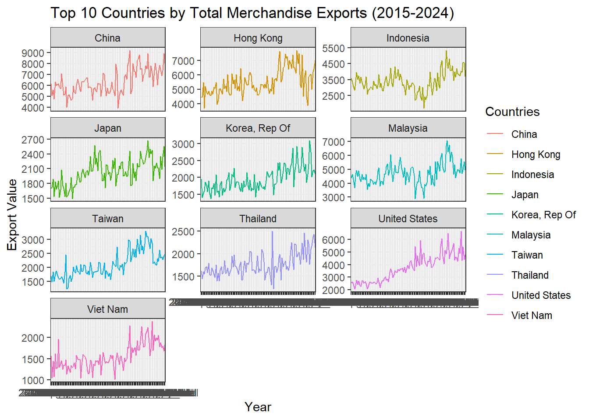
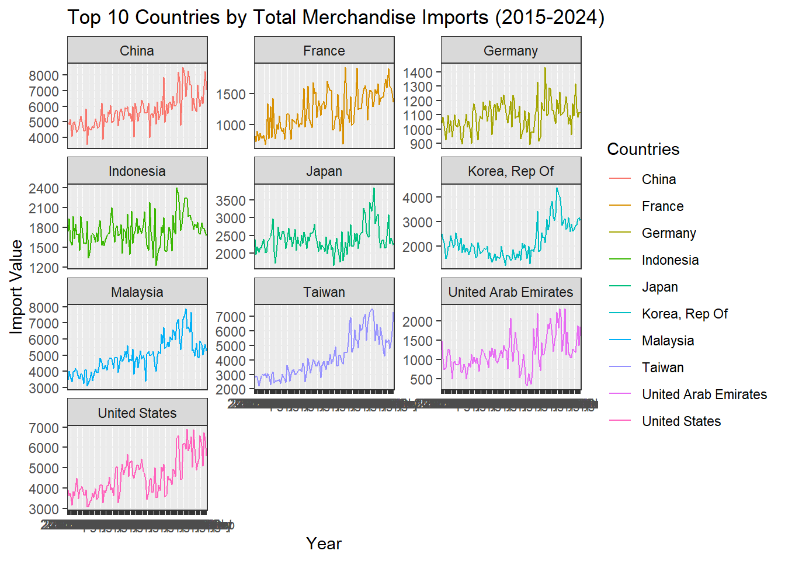
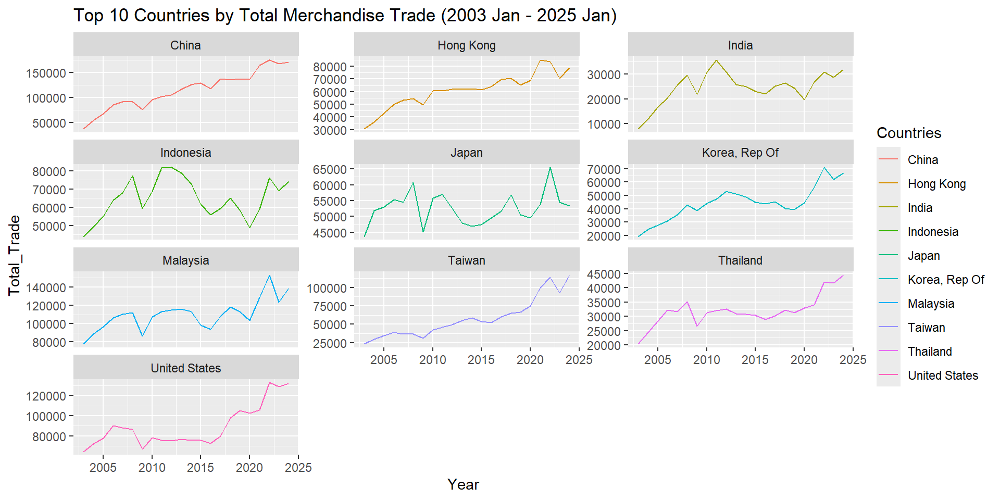

pacman::p_load(tidyverse,ggplot2,ggridges,ggdist,ggpubr,readxl,plotly,dplyr,lubridate,tsibble,feasts,fable,fable.prophet,timetk,modeltime,seasonal,timetk,tidymodels)Take-home_Ex2
1.0 Overview
1.1 Background
Since Donald Trump assumed office as the President of the United States on January 20, 2025, global trade has become a key focus of attention. Analyzing Singapore’s international trade patterns from 2015 onwards is crucial for understanding the impact of economic and political shifts on trade relationships. This take-home exercise offers the opportunity to apply data visualization techniques to uncover insights into these evolving trends.
1.2 Objective
The objective of this exercise is to:
- Extract and prepare Singapore’s Merchandise Trade by Region/Market data from DOS.
- Critique three existing visualizations from DOS, highlighting their strengths and weaknesses.
- Create improved visualizations using ggplot2 and other R packages.
- Perform time-series analysis or forecasting to analyze trends in Singapore’s international trade.
- Present findings in a structured Quarto HTML document, then publish it on Netlify.
2.0 Data Overview
2.1 Dataset Description
The dataset used in this analysis provides a comprehensive view of Singapore’s Merchandise Trade by Region/Market since 2015. It includes detailed records of imports and exports across multiple global regions, categorized by time periods The dataset allows for an in-depth examination of Singapore’s trade relationship, identifying trends, fluctuations, and potential impacts of global economic events on trade patterns.
Key variables include:
Region/Country: The geographical classification of trade partners.
Date: The time period (monthly data points) for tracking trade changes.
Imports: The total value of goods brought into Singapore from a specific region.
Exports: The total value of goods sent from Singapore to a specific region.
This dataset provides an ideal foundation for both time-series analysis and time-series forecasting, helps to uncover long-term trade trends and predict future patterns.
2.2 Target Audience
The insights derived from this dataset will be valuable to multiple stakeholders:
Economists & Policy Analysts: To study the impact of global trade policies and economic shifts on Singapore’s trade balance.
Business Analysts & Investors: To identify key trade trends, market dependencies, and potential investment opportunities.
Academics & Researchers: To explore trade relationships and perform data-driven studies on international commerce.
Government & Trade Authorities: To make informed decisions regarding trade agreements and economic strategies.
3.0 Getting Started
3.1 Importing the tools
The R packages that are going to be used for this exercises are:
General Data Visualization:
tidyverse: A collection of packages for data manipulation and visualization.
ggplot2: For creating high-quality, data-driven visualizations.
ggridges: For creating ridgeline plots to visualize distributions.
ggdist: For visualizing distributions and uncertainty in data.
ggpubr: Enhances ggplot2 for publication-ready plots.
plotly: Converts ggplot2 plots into interactive web visuals.
dplyr: Efficient tools for data manipulation and transformation.
Time-Series Analysis & Forecasting
- readxl: For importing Excel files into R.
- lubridate: Simplifies date and time parsing and manipulation.
- tsibble: A data structure for tidy time-series data.
- feasts: Tools for feature extraction and statistical analysis of time-series data.
- fable: Framework for time-series forecasting, supporting models like ARIMA and ETS.
- fable.prophet: Integrates Facebook’s prophet for time-series forecasting.
- timetk: Extends time-series visualization, feature engineering, and analysis.
- modeltime: A modern framework for machine learning-based time-series forecasting.
- seasonal: For performing seasonal adjustments in time-series data.
- tidymodels: A framework for modeling and machine learning, providing a consistent interface for model building and evaluation.
These tools will enable us to perform visual analytics, redesign existing trade visualizations, and implement time-series analysis effectively.
3.2 Importing Data
The first dataset used for this take home exercise is provided in Excel format and is split into three different sheets:
T1 - Imports
T2 - Domestic Exports
T3 - Re-Exports
Since total exports consist of domestic exports + re-exports, we will import and process all three sheets.
library(readxl)
imports <- read_excel("data/traderegion.xlsx", sheet = "T1", skip=10)
domestic_exports <- read_excel("data/traderegion.xlsx", sheet = "T2", skip=10)
re_exports <- read_excel("data/traderegion.xlsx", sheet = "T3", skip=10)
imports_clean <- imports[-c(161:200),]
domestic_exports_clean <- domestic_exports[-c(161:200),]
re_exports_clean <- re_exports[-c(161:200),]3.3 Creating a total exports column
3.3.1 Ensuring that column names for domestic exports and re-exports match
colnames(domestic_exports_clean) <- colnames(re_exports_clean)3.3.2 Convert numeric columns
domestic_exports_clean <- domestic_exports_clean %>%
mutate(across(-`Data Series`, as.numeric))
re_exports_clean <- re_exports_clean %>%
mutate(across(-`Data Series`, as.numeric))3.3.3 Merge datasets on both sheets using left join to preserve all rows
total_exports <- left_join(domestic_exports_clean, re_exports_clean, by = "Data Series", suffix = c("_domestic", "_re"))3.3.4 Sum for domestic exports and re-exports
total_exports <- total_exports %>%
mutate(across(matches("_domestic$"), ~ . + get(sub("_domestic$", "_re", cur_column())), .names = "{.col}_total")) %>%
select(`Data Series`, ends_with("_total")) %>%
rename_with(~ gsub("_(domestic|re)_total", "_total", .x))total_exports# A tibble: 160 × 266
`Data Series` `2025 Jan_total` `2024 Dec_total` `2024 Nov_total`
<chr> <dbl> <dbl> <dbl>
1 Total All Markets 59408. 60143. 58330.
2 America 7373. 7501. 6657.
3 Antigua And Barbuda 10.7 7.2 8.3
4 Argentina 31 28.3 23.3
5 Bahamas 61.2 49.4 64.2
6 Bermuda 2.8 7.7 0.5
7 Brazil 244. 207. 187.
8 Canada 113. 103. 155.
9 Chile 14 13.7 10.7
10 Colombia 10.7 16.4 12.5
# ℹ 150 more rows
# ℹ 262 more variables: `2024 Oct_total` <dbl>, `2024 Sep_total` <dbl>,
# `2024 Aug_total` <dbl>, `2024 Jul_total` <dbl>, `2024 Jun_total` <dbl>,
# `2024 May_total` <dbl>, `2024 Apr_total` <dbl>, `2024 Mar_total` <dbl>,
# `2024 Feb_total` <dbl>, `2024 Jan_total` <dbl>, `2023 Dec_total` <dbl>,
# `2023 Nov_total` <dbl>, `2023 Oct_total` <dbl>, `2023 Sep_total` <dbl>,
# `2023 Aug_total` <dbl>, `2023 Jul_total` <dbl>, `2023 Jun_total` <dbl>, …colnames(total_exports)[1] <- "Countries"colnames(imports_clean)[1] <- "Countries"3.3.5 Summarizing Total Trade Value by Country and Year
3.3.5.1 Summarizing Total Imports Value by Country and Year
imports_modified <- imports_clean %>%
pivot_longer(cols = -Countries, names_to = "Period", values_to = "Value")imports_modified$Period <- ym(imports_modified$Period)
imports_modified <- imports_modified %>%
mutate(Value = as.numeric(Value))
imports_modified <- imports_modified %>%
mutate(Year = year(Period))
imports_modified <- imports_modified %>%
select(Year, Countries, Value)
imports_modified <- imports_modified %>%
group_by(Countries, Year) %>%
summarise(Value = sum(Value, na.rm = TRUE))
imports_modified# A tibble: 3,680 × 3
# Groups: Countries [160]
Countries Year Value
<chr> <dbl> <dbl>
1 Afghanistan 2003 0.4
2 Afghanistan 2004 0.8
3 Afghanistan 2005 4.3
4 Afghanistan 2006 7.4
5 Afghanistan 2007 9.6
6 Afghanistan 2008 0
7 Afghanistan 2009 1
8 Afghanistan 2010 0.5
9 Afghanistan 2011 3.3
10 Afghanistan 2012 0.9
# ℹ 3,670 more rows3.3.5.2 Summarizing Total Exports Value by Country and Year
totalexports_modified <- total_exports %>%
pivot_longer(cols = -Countries, names_to = "Period", values_to = "Value")totalexports_modified$Period <- ym(totalexports_modified$Period)
totalexports_modified <- totalexports_modified %>%
mutate(Value = as.numeric(Value))
totalexports_modified <- totalexports_modified %>%
mutate(Year = year(Period))
totalexports_modified <- totalexports_modified %>%
select(Year, Countries, Value)
totalexports_modified <- totalexports_modified %>%
group_by(Countries, Year) %>%
summarise(Value = sum(Value, na.rm = TRUE))
totalexports_modified# A tibble: 3,680 × 3
# Groups: Countries [160]
Countries Year Value
<chr> <dbl> <dbl>
1 Afghanistan 2003 3.4
2 Afghanistan 2004 2.2
3 Afghanistan 2005 6.2
4 Afghanistan 2006 9.6
5 Afghanistan 2007 12.2
6 Afghanistan 2008 6.8
7 Afghanistan 2009 10
8 Afghanistan 2010 26.2
9 Afghanistan 2011 34.8
10 Afghanistan 2012 16
# ℹ 3,670 more rows3.3.5.3 Combining Total Imports and Total Exports for Total Trade Value by Country and Year
colnames(imports_modified) <- colnames(totalexports_modified)Total_Trade <- left_join(imports_modified, totalexports_modified, by = c("Countries", "Year"), suffix = c("_Imports", "_TotalExports"))Total_Trade <- Total_Trade %>%
mutate(Total_Trade = Value_Imports + Value_TotalExports)
Total_Trade# A tibble: 3,680 × 5
# Groups: Countries [160]
Countries Year Value_Imports Value_TotalExports Total_Trade
<chr> <dbl> <dbl> <dbl> <dbl>
1 Afghanistan 2003 0.4 3.4 3.8
2 Afghanistan 2004 0.8 2.2 3
3 Afghanistan 2005 4.3 6.2 10.5
4 Afghanistan 2006 7.4 9.6 17
5 Afghanistan 2007 9.6 12.2 21.8
6 Afghanistan 2008 0 6.8 6.8
7 Afghanistan 2009 1 10 11
8 Afghanistan 2010 0.5 26.2 26.7
9 Afghanistan 2011 3.3 34.8 38.1
10 Afghanistan 2012 0.9 16 16.9
# ℹ 3,670 more rows3.3.5.4 Summarizing Total Import and Export by Commodity Section and Year
merchandise_trade <- read_excel("data/tradecommodity.xlsx", skip = 10)
colnames(merchandise_trade)[1] <- "Commodity Sections"
time_columns <- colnames(merchandise_trade)[-1]
merchandise_trade_filtered <- merchandise_trade %>%
select(c("Commodity Sections", time_columns[year(ym(time_columns)) %in% 2015:2024]))
merchandise_import <- merchandise_trade_filtered[7:16, ] %>%
mutate(Type = "Import")
merchandise_export <- merchandise_trade_filtered[20:29, ] %>%
mutate(Type = "Export")
merchandise_trade_combined <- bind_rows(merchandise_import, merchandise_export)
merchandise_trade_combined# A tibble: 20 × 122
`Commodity Sections` `2024 Dec` `2024 Nov` `2024 Oct` `2024 Sep` `2024 Aug`
<chr> <dbl> <dbl> <dbl> <dbl> <dbl>
1 Beverages & Tobacco 851520. 771873. 808858. 808112. 867097.
2 Crude Materials (Excl… 598748. 612852 642347. 559562. 643154.
3 Animal & Vegetable Oi… 176576. 134924. 175904. 250542. 225965.
4 Chemicals & Chemical … 8845756. 8830083. 8762947. 9592894. 9021462
5 Manufactured Goods 3916616. 3819011. 3658806. 3670637. 3871806.
6 Machinery & Transport… 66552514. 58855550. 58966439. 59395076. 57247356.
7 Miscellaneous Manufac… 9388482. 10205074. 8774435. 8600265. 9193338.
8 Miscellaneous (Exclud… 4755027 6603747. 5881429. 2713714. 3783231.
9 Total Merchandise Imp… 56135912. 51802132 51415560. 49068356. 49948953.
10 Oil 9869429. 9269639. 9243615. 7420139. 9114922.
11 Beverages & Tobacco 448450. 386860. 420730 412506. 452801.
12 Crude Materials (Excl… 258482. 249893. 263216. 247063. 291875.
13 Animal & Vegetable Oi… 152676. 110486. 149548. 226106 202214.
14 Chemicals & Chemical … 3541227. 3520359. 3289815. 3768124. 3667642.
15 Manufactured Goods 2407339. 2391366. 2184869. 2277733. 2251667.
16 Machinery & Transport… 31836262. 28020850 27879207. 28405007. 26813214.
17 Miscellaneous Manufac… 4252471. 4861266. 3973757. 3697192. 3919941.
18 Miscellaneous (Exclud… 2105002. 1798918. 2791604. 1483621. 1996332
19 Total Merchandise Exp… 60142882. 58330192. 56110400 54444104. 55760575
20 Oil 8619544. 8792246. 8266435. 8266515. 9308131.
# ℹ 116 more variables: `2024 Jul` <dbl>, `2024 Jun` <dbl>, `2024 May` <dbl>,
# `2024 Apr` <dbl>, `2024 Mar` <dbl>, `2024 Feb` <dbl>, `2024 Jan` <dbl>,
# `2023 Dec` <dbl>, `2023 Nov` <dbl>, `2023 Oct` <dbl>, `2023 Sep` <dbl>,
# `2023 Aug` <dbl>, `2023 Jul` <dbl>, `2023 Jun` <dbl>, `2023 May` <dbl>,
# `2023 Apr` <dbl>, `2023 Mar` <dbl>, `2023 Feb` <dbl>, `2023 Jan` <dbl>,
# `2022 Dec` <dbl>, `2022 Nov` <dbl>, `2022 Oct` <dbl>, `2022 Sep` <dbl>,
# `2022 Aug` <dbl>, `2022 Jul` <dbl>, `2022 Jun` <dbl>, `2022 May` <dbl>, …merchandise_trade_type <- merchandise_trade_combined %>%
pivot_longer(cols = -c('Commodity Sections', Type), names_to = "Date", values_to = "Value")
merchandise_trade_type# A tibble: 2,400 × 4
`Commodity Sections` Type Date Value
<chr> <chr> <chr> <dbl>
1 Beverages & Tobacco Import 2024 Dec 851520.
2 Beverages & Tobacco Import 2024 Nov 771873.
3 Beverages & Tobacco Import 2024 Oct 808858.
4 Beverages & Tobacco Import 2024 Sep 808112.
5 Beverages & Tobacco Import 2024 Aug 867097.
6 Beverages & Tobacco Import 2024 Jul 921720.
7 Beverages & Tobacco Import 2024 Jun 746814.
8 Beverages & Tobacco Import 2024 May 755585.
9 Beverages & Tobacco Import 2024 Apr 758158.
10 Beverages & Tobacco Import 2024 Mar 753798
# ℹ 2,390 more rowslibrary(tidyverse)
library(lubridate)
merchandise_trade_type <- merchandise_trade_combined %>%
pivot_longer(cols = -c('Commodity Sections', Type), names_to = "Date", values_to = "Value") %>%
mutate(Year = year(ym(Date))) # Extract year from 'Date'
merchandise_trade_by_year <- merchandise_trade_type %>%
group_by(`Commodity Sections`, Type, Year) %>%
summarise(Value = sum(Value, na.rm = TRUE), .groups = 'drop')
merchandise_trade_by_year# A tibble: 200 × 4
`Commodity Sections` Type Year Value
<chr> <chr> <dbl> <dbl>
1 Animal & Vegetable Oils Fats & Waxes Export 2015 1080368.
2 Animal & Vegetable Oils Fats & Waxes Export 2016 1302809.
3 Animal & Vegetable Oils Fats & Waxes Export 2017 1417766.
4 Animal & Vegetable Oils Fats & Waxes Export 2018 1243608.
5 Animal & Vegetable Oils Fats & Waxes Export 2019 1665771.
6 Animal & Vegetable Oils Fats & Waxes Export 2020 2104569.
7 Animal & Vegetable Oils Fats & Waxes Export 2021 2999619.
8 Animal & Vegetable Oils Fats & Waxes Export 2022 3942328.
9 Animal & Vegetable Oils Fats & Waxes Export 2023 3574353.
10 Animal & Vegetable Oils Fats & Waxes Export 2024 3098804.
# ℹ 190 more rowslibrary(tidyverse)
library(lubridate)
merchandise_trade_type <- merchandise_trade_combined %>%
pivot_longer(cols = -c('Commodity Sections', Type), names_to = "Date", values_to = "Value") %>%
mutate(Year = year(ym(Date))) # Extract year from 'Date'
merchandise_trade_by_year <- merchandise_trade_type %>%
group_by(`Commodity Sections`, Year, Type) %>%
summarise(Value = sum(Value, na.rm = TRUE), .groups = 'drop')
exports_data <- merchandise_trade_by_year %>%
filter(Type == "Export") %>%
select(`Commodity Sections`, Year, Export_Value = Value)
imports_data <- merchandise_trade_by_year %>%
filter(Type == "Import") %>%
select(`Commodity Sections`, Year, Import_Value = Value)
combined_commodity_data <- left_join(exports_data, imports_data, by = c("Commodity Sections", "Year"))
combined_commodity_data <- combined_commodity_data %>%
mutate(Total = Import_Value + Export_Value)
combined_commodity_data# A tibble: 100 × 5
`Commodity Sections` Year Export_Value Import_Value Total
<chr> <dbl> <dbl> <dbl> <dbl>
1 Animal & Vegetable Oils Fats & Waxes 2015 1080368. 1355164. 2435533.
2 Animal & Vegetable Oils Fats & Waxes 2016 1302809. 1551932. 2854741.
3 Animal & Vegetable Oils Fats & Waxes 2017 1417766. 1679301. 3097067.
4 Animal & Vegetable Oils Fats & Waxes 2018 1243608. 1501732. 2745341.
5 Animal & Vegetable Oils Fats & Waxes 2019 1665771. 1903311. 3569082.
6 Animal & Vegetable Oils Fats & Waxes 2020 2104569. 2353922. 4458490.
7 Animal & Vegetable Oils Fats & Waxes 2021 2999619. 3312861. 6312480.
8 Animal & Vegetable Oils Fats & Waxes 2022 3942328. 4347153. 8289480.
9 Animal & Vegetable Oils Fats & Waxes 2023 3574353. 3886116. 7460468.
10 Animal & Vegetable Oils Fats & Waxes 2024 3098804. 3370374. 6469177.
# ℹ 90 more rows4.0 Evaluate and create make-over of data visualisation
4.1 Data Visualisation 1: Total Merchandise Trade at Current Price, 2020 - 2024
Critic
The current visualization of total merchandise trade effectively displays both imports and exports for each year using a single stacked bar chart. The imports values are shown on top, exports values on the bottom, and the total trade value is represented as a line in between, with percentage growth or decline annotated on the chart. While this layout allows for a clear comparison between imports and exports, it still lacks the ability to highlight long-term trends. Although the chart provides a snapshot of annual trade values, it does not give enough emphasis to the overall progression or changes in trade over time. The line indicating total trade growth is a good step toward this, but additional time-series elements, like smoothing or trendlines, could enhance the understanding of fluctuations in trade values. Furthermore, integrating the total trade values more prominently within the bar structure could offer a more cohesive and visually compelling narrative, making it easier to track the evolution of Singapore’s trade over the years. This approach would help in revealing patterns and trends, contributing to a more comprehensive view of how imports and exports are evolving alongside total trade.
total_trade_filtered <- Total_Trade %>%
filter(Countries == "Total All Markets" & Year >= 2019 & Year <= 2024)
total_trade_filtered$Year <- as.factor(total_trade_filtered$Year)
dodge_pos <- position_dodge(width = 0.6)total_trade_filtered <- total_trade_filtered %>%
arrange(Year) %>%
mutate(Total_Trade_Growth = (Total_Trade / lag(Total_Trade) - 1) * 100)
midpoint <- 0
p <- ggplot(total_trade_filtered) +
geom_bar(aes(x = Year, y = Value_Imports, fill = "Imports"),
stat = "identity", position = "identity", width = 0.5) +
geom_bar(aes(x = Year, y = -Value_TotalExports, fill = "Exports"),
stat = "identity", position = "identity", width = 0.5) +
geom_line(aes(x = Year, y = Total_Trade, group = 1, color = "Total Trade"),
size = 1) +
geom_point(aes(x = Year, y = Total_Trade, color = "Total Trade"),
size = 3) +
geom_text(aes(x = Year, y = midpoint, label = scales::comma(Total_Trade)),
size = 3, fontface = "bold", color = "black") +
geom_text(aes(x = Year, y = Total_Trade * 1.05,
label = ifelse(!is.na(Total_Trade_Growth), paste0(round(Total_Trade_Growth, 1), "%"), "")),
size = 3, fontface = "bold", color = "#636363") +
theme(axis.text.x = element_text(angle = 45, hjust = 1)) +
scale_y_continuous(breaks = seq(-1500000, 1500000, by = 250000),
limits = c(-1500000, 1500000),
labels = function(x) scales::comma(abs(x))) +
labs(title = "Total Merchandise Trade (Imports & Exports) - All Markets",
y = "Trade Value", x = "Year") +
scale_fill_manual(values = c("Imports" = "#6BAED6", "Exports" = "#FC9272")) +
scale_color_manual(values = c("Total Trade" = "#636363")) +
theme_minimal() +
theme(legend.position = "bottom")
ggplotly(p, tooltip = c("x", "y")) %>%
layout(height = 400, width = 600)4.2 Data Visualisation 2: Merchandise Trade Performance with Major Trading Partners (2024)
Critic
The current visualization of merchandise trade performance with major trading partners provides useful insights into the balance between imports and exports. The scatter plot, with exports on the x-axis and imports on the y-axis, effectively places countries with higher exports on the lower right side and those with higher imports on the upper left. The use of bubble sizes to represent total trade value is also intuitive, giving a sense of the economic scale of each country’s trade with Singapore. However, the size of the bubbles may present some challenges. When bubbles are close together, it becomes difficult to interpret the values accurately, especially when there is overlap. The scatter plot itself doesn’t allow for an easy view of the specific trade balance (exports vs. imports) for each country, requiring users to rely on the tooltips for precise information. Additionally, while the diagonal line helps to differentiate countries with more exports or imports, it does not provide much further detail on the magnitude of the imbalance. To improve clarity, it could be beneficial to add a visual indicator or color gradient showing the trade balance (i.e., a red-green scale), making it easier to spot trends in trade surpluses or deficits. Lastly, the chart’s effectiveness could be enhanced by simplifying the plot elements, such as by labeling the countries directly on the plot, making it easier to associate the bubbles with their respective countries without relying solely on tooltips.
print(Total_Trade %>% filter(Year == 2024) %>% head())# A tibble: 6 × 5
# Groups: Countries [6]
Countries Year Value_Imports Value_TotalExports Total_Trade
<chr> <dbl> <dbl> <dbl> <dbl>
1 Afghanistan 2024 0.2 1 1.2
2 Africa 2024 6850. 12712. 19562.
3 Algeria 2024 282. 101 383.
4 America 2024 95346. 78798. 174144.
5 Angola 2024 899 202. 1101.
6 Antarctica 2024 0 0 0 top_trade_partners <- Total_Trade %>%
filter(Year == 2024) %>%
filter(!grepl("^Total All Markets$|^America$|^Europe$|^Asia$|^Africa$|^Oceania$|^Other Markets", trimws(Countries))) %>%
arrange(desc(Total_Trade)) %>%
head(10)
top_trade_partners$Value_TotalExports <- as.numeric(top_trade_partners$Value_TotalExports)
top_trade_partners$Value_Imports <- as.numeric(top_trade_partners$Value_Imports)
max_exports <- max(top_trade_partners$Value_TotalExports, na.rm = TRUE)
max_imports <- max(top_trade_partners$Value_Imports, na.rm = TRUE)
print(paste("Max Exports:", max_exports))[1] "Max Exports: 94442.7"print(paste("Max Imports:", max_imports))[1] "Max Imports: 84318.4"country_colors <- c("China" = "blue", "Malaysia" = "red", "United States" = "green",
"Taiwan" = "purple", "Hong Kong" = "orange", "Indonesia" = "pink",
"Korea" = "cyan", "Japan" = "yellow", "Thailand" = "brown", "India" = "gray")
p <- ggplot(top_trade_partners, aes(x = Value_TotalExports,
y = Value_Imports,
size = Total_Trade,
color = Countries,
text = paste0("Country: ", Countries,
"<br>Exports: ", scales::comma(Value_TotalExports),
"<br>Imports: ", scales::comma(Value_Imports),
"<br>Total Trade: ", scales::comma(Total_Trade)))) +
geom_point(alpha = 0.7) +
scale_size_continuous(range = c(5, 15), labels = scales::comma) +
scale_x_continuous(labels = scales::comma,
limits = c(0, max_exports * 1.1)) +
scale_y_continuous(labels = scales::comma,
limits = c(0, max_imports * 1.1)) +
geom_abline(slope = 1, intercept = 0, linetype = "dashed", color = "black") +
scale_color_manual(values = country_colors) +
geom_text(aes(label = gsub("United States", "US", Countries)),
check_overlap = TRUE,
size = 3,
color = "black",
fontface = "bold",
stroke = 0.5,
nudge_y = 3000) +
theme_minimal() +
labs(title = "Top 10 Merchandise Trade Partners (2024)",
x = "Exports (SGD)",
y = "Imports (SGD)",
size = "Total Trade Value",
color = "Country") + # Color by Country
theme(legend.position = "right",
panel.grid.major = element_line(size = 0.5, color = "gray"),
panel.grid.minor = element_line(size = 0.25, color = "lightgray"))
ggplotly(p, tooltip = "text") %>%
layout(
height = 400,
width = 600,
dragmode = "zoom",
updatemenus = list(
list(
buttons = list(
list(method = "relayout", args = list("xaxis.range", c(0, max_exports * 1.1))),
list(method = "relayout", args = list("yaxis.range", c(0, max_imports * 1.1)))
)
)
)
)4.3 Data Visualisation 3: Non-Oil Merchandise Trade by Major Commodity Sections (2024)
Critic
The bar chart effectively compares exports and imports across major commodity sections, making it clear which sections contribute more to trade. However, a simple grouped bar chart might not always provide the best comparison across multiple sections, particularly when there are numerous categories or a large variance in trade values. In this case, the top five commodity sections are selected, which helps to focus the analysis, but the chart might still be challenging to interpret in terms of proportional trade imbalances. The visual clutter that could arise from multiple sections with significantly different values could overwhelm the viewer, especially if there were more than five sections being compared.
combined_commodity_data_filtered <- combined_commodity_data %>%
filter(Year == 2024) %>%
filter(`Commodity Sections` != "Total Merchandise Exports, (At Current Prices)")
combined_commodity_data_filtered <- combined_commodity_data_filtered %>%
mutate(Total_Trade = Export_Value + Import_Value)
top_5_commodities <- combined_commodity_data_filtered %>%
group_by(`Commodity Sections`) %>%
summarise(Total_Section_Value = sum(Total_Trade), .groups = "drop") %>%
slice_max(Total_Section_Value, n = 5) %>%
pull(`Commodity Sections`)
data_top_5 <- combined_commodity_data_filtered %>%
filter(`Commodity Sections` %in% top_5_commodities)
data_top_5_long <- data_top_5 %>%
pivot_longer(cols = c(Export_Value, Import_Value),
names_to = "Type",
values_to = "Value") %>%
mutate(Type = recode(Type,
"Export_Value" = "Exports",
"Import_Value" = "Imports"))
p <- ggplot(data_top_5_long, aes(x = reorder(`Commodity Sections`, -Value),
y = Value, fill = Type,
text = paste("Trade Value: SGD", scales::comma(Value)))) +
geom_bar(stat = "identity", position = "dodge", width = 0.7) +
scale_fill_manual(values = c("Exports" = "#6BAED6", "Imports" = "#FC9272")) +
theme_minimal() +
labs(title = "Top 5 Non-Oil Merchandise Trade by Major Commodity Sections (2024)",
x = "Commodity Section",
y = "Trade Value (SGD)",
fill = "Trade Type") +
theme(axis.text.x = element_text(angle = 45, hjust = 1),
legend.position = "bottom") +
scale_y_continuous(labels = scales::comma)
interactive_plot <- ggplotly(p, tooltip = "text")
interactive_plot5.0 Time Series Analysis
5.1 Total Market Trade Over the Years
Total_Trade_Growth <- Total_Trade %>%
filter(Countries == "Total All Markets", Year != "2025") %>%
arrange(Year) %>%
mutate(Percentage_Growth = (Total_Trade - lag(Total_Trade)) / lag(Total_Trade) * 100)
tsa <- ggplot(Total_Trade_Growth, aes(x = Year, y = Total_Trade)) +
geom_line(size = 0.5, color = "blue") +
geom_point(color = "red") +
scale_y_continuous(labels = scales::comma) +
theme_minimal() +
labs(title = "Total Market Trade Over the Years",
x = "Year",
y = "Total Trade (SGD)") +
geom_text(aes(y = Total_Trade * 1.05,
label = ifelse(!is.na(Percentage_Growth),
paste0(round(Percentage_Growth, 1), "%"), "")),
vjust = -0.5, color = "black", size = 3)
ggplotly(tsa)5.2 Top 10 Countries by Total Market Trade Over the Years
excluded_regions <- c("Total All Markets", "America", "Asia", "Africa", "Oceania", "Europe", "Other Markets America", "Other Markets Asia", "Other Markets Africa", "Other Markets Oceania", "Other Markets Europe")
Total_Trade <- Total_Trade %>%
filter(!Countries %in% excluded_regions, Year !=2025)
top_10_countries <- Total_Trade %>%
group_by(Countries) %>%
summarise(Total_Trade_Sum = sum(Total_Trade, na.rm = TRUE)) %>%
top_n(10, Total_Trade_Sum) %>%
pull(Countries)
Total_Trade_Top10 <- Total_Trade %>%
filter(Countries %in% top_10_countries)
mts <- ggplot(Total_Trade_Top10, aes(x = Year, y = Total_Trade, color = Countries)) +
geom_line(size = 0.8) +
scale_y_continuous(labels = scales::comma) +
theme_minimal() +
labs(title = "Top 10 Countries by Total Market Trade Over the Years",
x = "Year", y = "Total Trade (SGD)", color = "Country") +
theme(legend.position = "bottom",
legend.box.spacing = unit(0.5, "cm"))
ggplotly(mts)5.3 Top 10 Countries by total Merchandise Exports (2015-2024)
library(ggplot2)
library(dplyr)
library(tidyr)
Total_exports_ts <- total_exports %>%
pivot_longer(cols = -Countries,
names_to = "Year",
values_to = "Value") %>%
arrange(Countries, Year)
Total_exports_ts <- Total_exports_ts %>%
filter(!Countries %in% excluded_regions, Year >= 2015 & Year <= 2024)
top_10_exports <- Total_exports_ts %>%
group_by(Countries) %>%
summarise(Total_Exports_Sum = sum(Value, na.rm = TRUE)) %>%
top_n(10, Total_Exports_Sum) %>%
pull(Countries)
Total_Exports_Top10 <- Total_exports_ts %>%
filter(Countries %in% top_10_exports)
ggplot(data = Total_Exports_Top10,
aes(x = Year, y = Value, group = Countries, color = Countries)) +
geom_line(size = 0.5) +
facet_wrap(~ Countries, ncol = 3, scales = "free_y") +
theme_bw() +
labs(title = "Top 10 Countries by Total Merchandise Exports (2015-2024)",
x = "Year", y = "Export Value")
5.4 Top 10 Countries by total Merchandise Imports (2015-2024)
Imports_ts <- imports_clean %>%
pivot_longer(cols = -Countries,
names_to = "Year",
values_to = "Value") %>%
arrange(Countries, Year)
Imports_ts <- Imports_ts %>%
filter(!Countries %in% excluded_regions, Year >= 2015 & Year <= 2024)
top_10_imports <- Imports_ts %>%
group_by(Countries) %>%
summarise(Total_Imports_Sum = sum(Value, na.rm = TRUE)) %>%
top_n(10, Total_Imports_Sum) %>%
pull(Countries)
Imports_Top10 <- Imports_ts %>%
filter(Countries %in% top_10_imports)
ggplot(data = Imports_Top10,
aes(x = Year, y = Value, group = Countries, color = Countries)) +
geom_line(size = 0.5) +
facet_wrap(~ Countries, ncol = 3, scales = "free_y") +
theme_bw() +
labs(title = "Top 10 Countries by Total Merchandise Imports (2015-2024)",
x = "Year", y = "Import Value")
5.5 Top 10 Countries by Total Merchandise Trade (2003 - 2025)
ggplot(data = Total_Trade_Top10,
aes(x = Year, y = Total_Trade, group = Countries, color = Countries))+
geom_line(size = 0.5) +
facet_wrap(~ Countries,
ncol = 3,
scales = "free_y") +
labs(title = "Top 10 Countries by Total Merchandise Trade (2003 Jan - 2025 Jan) ")